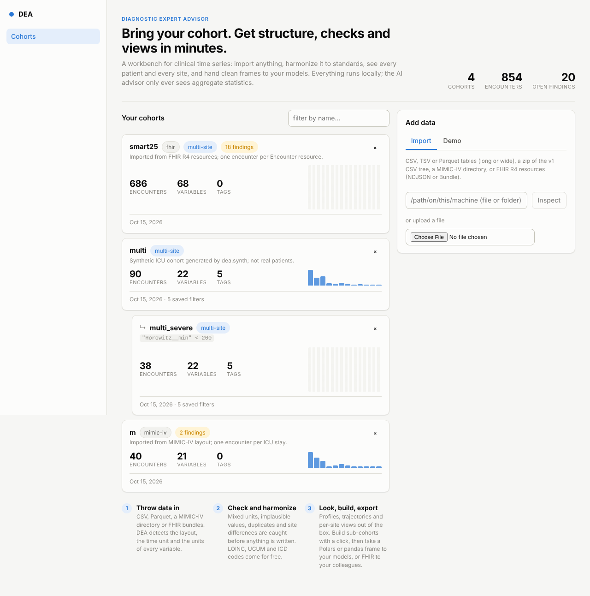
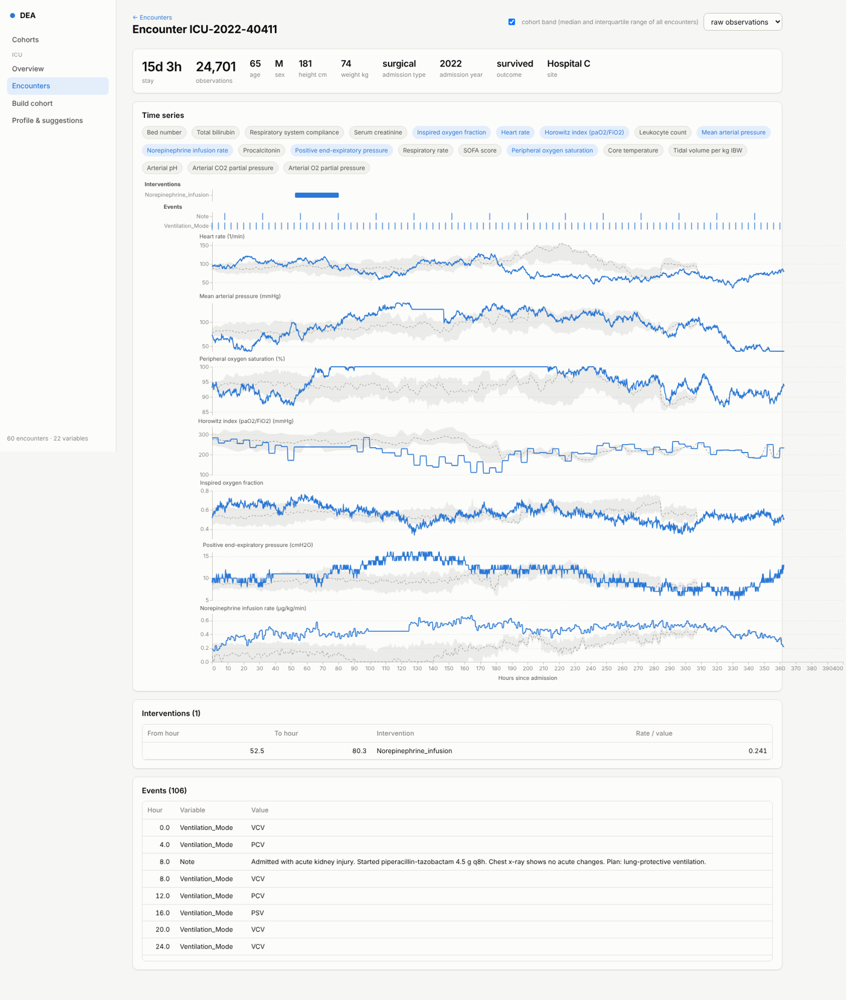

Bring your cohort. Get structure, checks and views in minutes.
A workbench for clinical time series: import hospital data in whatever layout it comes in, get it checked and harmonized to standards, look at every patient and every site, and hand a clean table to your models. Everything runs locally.

Import anything
CSV and Parquet tables, long or wide; MIMIC-IV directories; FHIR R4 bundles and bulk exports. Layout, columns, time unit and units are detected and can be overridden.
Check before writing
Mixed units, implausible values with the unit that explains them, duplicates, time offsets, missing variables per site. One-click fixes, recorded in the cohort.
Harmonize to standards
LOINC and UCUM for measurements, ICD-9/ICD-10 groups for diagnoses, RxNorm/ATC for drugs, site mapping files for everything local.
See every site
Case mix, per-site distributions on shared bins, coverage and sampling grids, and findings that tell a unit problem from a population difference.
See every patient
Time series with the cohort's median and interquartile band behind them, interventions as spans, events on a rail.
To a model
One call gives an encounter-level dataset with a prediction cutoff, a leakage guard and a split by encounter, patient or whole hospital.
Get started
With uv:
git clone https://github.com/DeastinY/diagnostic-expert-advisor.git dea cd dea && uv sync --all-extras uv run dea synth data/demo --n 60 --sites 3 uv run dea serve --data-dir data
With your own export or MIMIC-IV:
uv run dea detect export.csv uv run dea import export.csv data/mine uv run dea import physionet.org/files/mimic-iv-demo/2.2 data/mimic uv run dea ml data/mimic ds.parquet --label "Severe ARDS" --cutoff 24
What it looks like


